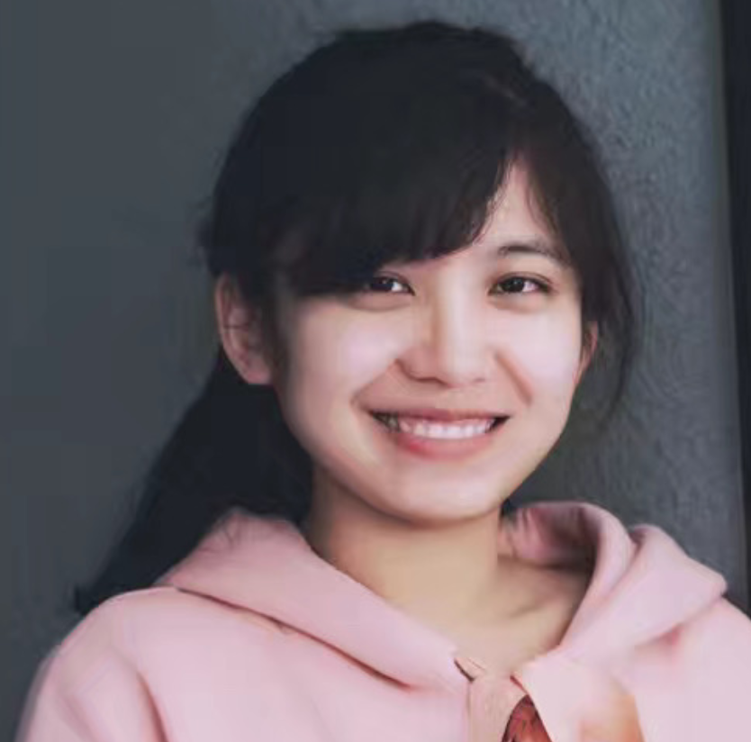

|  |
Ph.D. student Department of Computer Science and Engineering University at Buffalo Email: xuangong AT buffalo DOT edu Google scholar / LinkedIn / CV |
I am a final-year Ph.D. student advised by Prof. David Doermann.
I got M.E. and B.E. degree from Beihang University.
I worked as a Research Intern at
Meta Reality Lab,
OPPO US Research, and UII America.